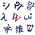

Main Page
|
|
|
{kind=link}
{kind=link}
{kind=link}
_4.jpg){kind=link}
|
.jpg){kind=link}
Other areas of Wikipedia
- Community portal – Bulletin board, projects, resources and activities covering a wide range of Wikipedia areas.
- Help desk – Ask questions about using Wikipedia.
- Local embassy – For Wikipedia-related communication in languages other than English.
- Reference desk – Serving as virtual librarians, Wikipedia volunteers tackle your questions on a wide range of subjects.
- Site news – Announcements, updates, articles and press releases on Wikipedia and the Wikimedia Foundation.
- Village pump – For discussions about Wikipedia itself, including areas for technical issues and policies.
Wikipedia's sister projects
Wikipedia is hosted by the Wikimedia Foundation, a non-profit organization that also hosts a range of other projects:
| Commons Free media repository |
MediaWiki Wiki software development |
Meta-Wiki Wikimedia project coordination |
|||
| Wikibooks Free textbooks and manuals |
Wikidata Free knowledge base |
Wikinews Free-content news |
|||
| Wikiquote Collection of quotations |
Wikisource Free-content library |
Wikispecies Directory of species |
|||
| Wikiversity Free learning materials and activities |
Wikivoyage Free travel guide |
 | Wiktionary Dictionary and thesaurus |